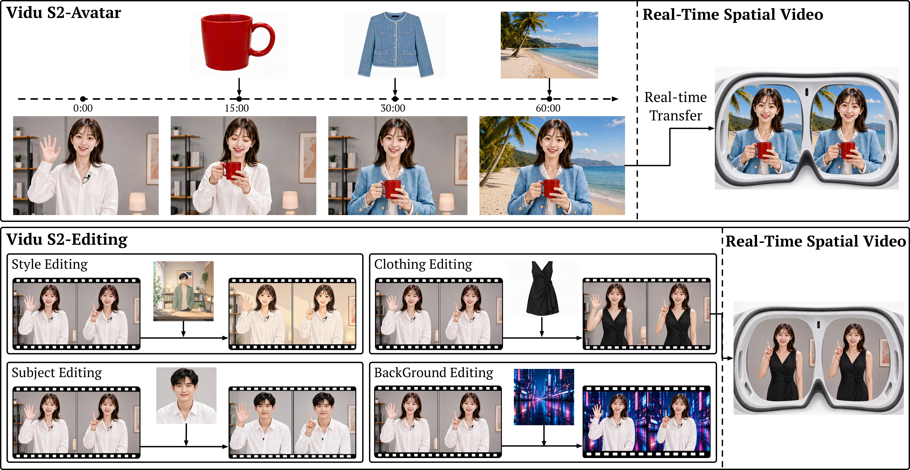
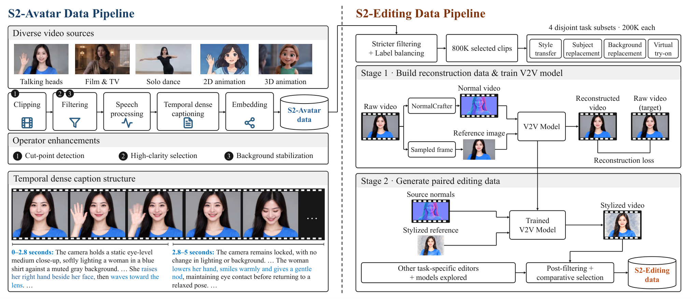

Technical Deep Dive · Diffusion Generation · Streaming Video
Vidu S2：让生成视频变成可交互的实时流
它不只是把视频模型跑快：Avatar 要在用户随时改口令、换参考图时维持人物与动作连续；Editing 要逐帧读取摄像头并同步改写；空间视频还要在时延预算内补成立体双目。本文拆开训练、缓存、数据和服务四层，重点解释 Self-Replay Forcing 为什么能缓解长流漂移，以及哪些性能结论还不能独立复现。
0. 一句话结论 #
Vidu S2 把离线整段视频生成改造成可持续交互的流式系统：用自生成轨迹的重加噪与可微 replay 训练因果模型，用逐帧对齐注意力保持编辑的动作同步，再以单步 Refiner、量化注意力和模块调度满足实时预算；论文报告 Avatar 在 720p 下达 25–42 FPS、多个基准领先，但未公开模型代码与权重，也缺少各模块独立消融和完整端到端时延表。
核心 insight：流式生成的难点不是“每秒产多少帧”一个数字，而是模型能否在自己生成、已经有误差的历史上继续稳定输出，同时接受新条件。Self-Replay Forcing 把这一历史分布纳入训练；编辑分支则把“当前输入帧”变成每个目标帧必须对齐的条件。

1. 论文定位：三个任务，一套流式约束 #
Avatar：输入初始人物/参考图、语音与随时间变化的文字指令，连续生成同步的音视频。相较 Vidu S1，目标从 540p 谈话头像扩到 720p、较大幅身体动作与运行时替换参考图。
Editing：输入实时源视频、文字编辑指令和可选外观参考，输出同节奏的编辑视频。它不是“给整段视频等几分钟后返回结果”，而是源帧到达后马上进入流式因果生成。
Spatial：把生成/编辑后的单目帧转换为左右眼视频；已有双目输入则把两眼横向拼接，一次编辑后拆回。这里的 spatial 是立体视频管线，不是显式可漫游 3D 世界模型。
| 系统 | 历史条件 | 新条件如何进入 | 主要风险 |
|---|---|---|---|
| 离线双向视频 DiT | 整段 noisy 视频 | 生成前固定 | 等待整段完成 |
| Vidu S1 | 因果缓存与旧视频块 | 语音指令更新；参考图固定 | 540p、动作范围窄 |
| Vidu S2-Avatar | 自生成音视频与 KV cache | 逐段指令、动态参考、VLM 反馈 | 长流漂移、身份变化 |
| Vidu S2-Editing | 历史编辑结果 + 当前源帧 | 编辑指令与外观参考 | 源/输出错帧、修改区域泄漏 |
2. 方法总览：从数据到流式输出 #
- 从说话、影视、独舞与动画视频中切出无剪辑片段；以清晰度、稳定性等维度过滤，生成按事件边界切分的时序 caption。
- Avatar 先用双向 audio-visual DiT 做 I2V/R2V 预训练，再把时间注意力改成按块因果 mask。
- 因果适配混合 clean-history Teacher Forcing 与 noisy-history Diffusion Forcing。
- Self-Replay Forcing 先让当前学生自回归生成历史，再把轨迹重加噪，在同一计算图中因果 replay 并做 DMD/感知监督。
- 在线 Avatar 输入当段指令与参考图，低分辨率 backbone 生成音视频 latent；单步 Refiner 提升空间细节，VAE 解码成 720p 帧。
- Editing 从 80 万源视频构造四类编辑配对数据；双向预训练时目标帧只访问同时间的源帧，随后采用相同因果/SRF 训练。
- 服务端按层选择高效注意力，使用 W8A8 GEMM、融合 kernel、CUDA Graph 和跨模块 GPU 调度。
- 空间输出额外做深度估计、视差 warp、孔洞修复和双眼同步；双目源可拼成宽帧统一编辑。
Avatar: (identity ref, audio, c_i, generated history/cache)
→ causal audio-visual DiT → low-res AV latent_i
→ one-step latent Refiner → VAE decode → 720p video + audio
→ optional depth → left/right stereo frames
Editing: (source frame/segment s_i, optional ref, edit c_i, output history)
→ frame-aligned source/target tokens + condition-specific RoPE
→ causal editing DiT → edited latent_i → VAE decode
Training: bidirectional pretrain → hybrid TF/DF causal adaptation
→ detached student rollout → re-noise → differentiable SRF replay
→ DMD + perceptual loss → preference/reward optimization记 $N$ 为视频段数，$x^i$ 为第 $i$ 段的音视频联合 latent，$s^i$ 为源视频 latent，$r$ 为参考图 embedding，$c^i$ 为该段 caption/指令。概念上视频 latent 可写成 [B,C,T',H',W']，但音频 token 是另一流；论文没有给出 patch 大小、通道数、段长与两流精确布局，不应把示意形状当作官方配置。

3. 关键创新点：真正改变了什么 #
3.1 Self-Replay Forcing：把自生成历史重新接上梯度
旧方法瓶颈：Teacher Forcing 看到干净真值历史，测试时却只能看到模型自己的输出；Self-Forcing 虽然让学生在自生成历史上继续，但历史和 KV cache 被 detach，后面块的损失不能穿过历史影响前面块。长流的误差因此仍难以获得跨块训练信号。
改法：先用学生做一段较长的真实自回归 rollout，完整轨迹与原始 cache 均 detach；然后对轨迹每块独立重加噪，再以因果 mask 在一个开启梯度的 replay pass 中重新计算。DMD 对各块监督，感知项抑制模式坍缩。
机制：训练输入来自学生自己制造的历史，更接近推理；replay 的块间表征在同一计算图中，后块损失可以经 replay 依赖传到前块。它不是穿过最初的 rollout 反传，因此不需要长期保存 rollout 图。
代价/边界：同一轨迹至少经历 rollout 与 replay，计算、缓存和显存更贵；论文未报告 SRF-only 消融、replay 长度或精确训练开销。跨块梯度只存在于 replay 的有效窗口，不能推断它学会无限长依赖。
3.2 时间对齐编辑：让输入帧只驱动同时间输出帧
旧方法瓶颈：若生成的第 $i$ 帧可以任意读取源视频其它时刻，模型可能借未来/过去源帧混合动作，造成延时和动作错位；在线流也不允许读取未来输入。
改法：将源帧、目标帧和可选参考图编码为条件 token，以不同 RoPE 表示位置；目标第 $i$ 帧只和源第 $i$ 帧交换信息，而外观参考对每帧可见。在线时源帧和对应的已消费输出帧一同从 cache 移除。
机制：源帧负责动作、布局和当前时序，参考图负责希望写入的外观；注意力可见性直接把“保留动作但改外观”写进信息流约束。
代价/边界：对异步传感器、需要跨帧跟踪的遮挡以及输入抖动仍需额外状态。论文没有公开精确 attention mask 实现，也没有单独报告去掉 frame alignment 的消融。
3.3 数据标注与合成：时序事件和配对编辑数据
旧方法瓶颈：单个整段 prompt 很难描述“拿杯、保持握持、再微笑”的状态转移；仅按名义 1080p 过滤会保留严重压缩视频。编辑训练还需要同运动、不同外观的配对视频，直接采集困难。
改法：用候选切点加 VLM 二次判断，论文称误删低于 2%；以编码参数与纹理/边缘/压缩伪影综合筛清晰度，对可近似几何校正的平滑运镜做背景稳定；按事件边界写时间有序 caption。编辑从 80 万源视频分成四个互斥的 20 万子集，其中风格迁移借助表面法线视频与替换后的风格参考合成目标视频；其他任务用专门编辑器生成候选，再筛选。
机制：事件 caption 提供可更新的段级监督；几何条件尽量固定动作，外观参考改变风格。编辑 caption 不读取源视频内容，避免文字条件偷带源画面信息。
代价/边界：数据构造大量依赖私有筛选器、VLM 和外部编辑器，配对数据中可能继承合成器偏差；“80 万源视频”不等于公开的 80 万高质量编辑对。
3.4 单步超分 + 服务优化：模型结构之外的实时性
低分辨率 backbone 负责动作时间轴；Refiner 对上采样 latent 在固定 $t_r$ 加噪、一步恢复高分辨率细节。backbone 用较高噪声历史 cache 保持粗时间结构，Refiner 用较低噪声高分辨率 cache 保住身份和纹理（$\tau_B>\tau_R$）。推理还叠加逐层 SageAttention/SpargeAttention/SLA 选择、per-block W8A8、Triton/CUDA 融合与 CUDA Graph。
这些优化共同决定 25–42 FPS 的系统结果。论文没有逐项消融吞吐与质量，也未公开硬件、并发、首帧时间、网络/编码延迟的完整对照表；不能把 FPS 全部归功于 SRF，或把吞吐等同于交互延迟。
3.5 VLM 控制闭环与立体输出：系统层，而非单个 DiT
VLM agent 把用户请求拆成身份、表情、视线、姿态、手持物等可连续更新的描述，并回看输出帧判断动作已完成、部分完成或不匹配。它在指令变化时显式保留未要求修改的状态；例如杯子被拿起后，下段“微笑”仍应包含“继续拿杯”。这是外部控制闭环，不应误认为 DiT 内部有符号状态机。
立体分支从单目深度转视差、左右 warp、边缘补洞并平滑深度；双目输入则左右拼接后一起编辑。它提供观看深度，但没有明确几何一致的可自由视角场景表示。
4. 训练与推理：输入、输出和状态 #
Avatar 训练
- 双向 DiT 混合 I2V（$r$ 是目标视频首帧）与 R2V（$r$ 是独立参考图），每个时间段都有对应条件 $c^i$。
- 改为 block-causal attention；训练时按未公布概率在干净真值历史与不同噪声级别历史间切换。
- 学生按在线方式自回归生成，detach 原 rollout/cache；采样自生成轨迹，对各段独立加噪并做可微 causal replay。
- 用 DMD 和感知损失训练 replay；双向阶段加 Diffusion DPO，流式阶段在自生成轨迹上做 Streaming NFT。
- 训练一阶段 latent Refiner，用高噪声 backbone cache 与低噪声高分辨率 Refiner cache 分工。
Avatar 在线推理
初始图、语音与当下指令送入流式模型；每生成一段，将有效历史写入 noisy KV cache，保留 sink blocks 与滑动窗口。用户可改指令/参考图；VLM 反馈对接下来的分段条件作修正。输出低分辨率 latent 经 Refiner、解码与可选立体转换后播出。
Editing 训练与在线推理
输入为源视频 $s^{1:N}$、可选参考 $r$、编辑指令 $c^{1:N}$，目标是编辑后视频 $x_0^{1:N}$。先双向训练以学会编辑，再用因果 mask、混合 TF/DF 与 SRF 转为流式。在线每到一个源帧/块就生成对应目标；条件源帧与目标按时间对齐，过期数据移出 cache。VAE 编码、DiT、Refiner 与 VAE 解码以时间复用 GPU。
实现状态：官方仓库当前只有 README 与总览图，没有训练/推理脚本、模型权重或评测代码。因此上面是论文描述的设计，不是经源码核对后的调用链。
5. 四个关键公式：逐项落到张量与操作 #
5.1 联合音视频去噪
$x_t^{1:N}$ 是 $N$ 段带噪的联合音视频表示；$t$ 是扩散时间；$r$ 是身份/外观参考，$c^i$ 是第 $i$ 段文本条件。输出 $\hat{x}_0^{1:N}$ 是去噪预测。代码层应有音频/视频编码、段级条件投影、DiT、音视频输出头；论文未披露两流 token 的确切 shape 和混合方式。
5.2 因果生成的历史接口
$i$ 是当前段；$x_{t_i}^i$ 是本段待去噪 latent；$x_{\tau_i}^{<i}$ 是只包含过去段、带噪声级别 $\tau_i$ 的历史状态。实现上要同时约束 attention mask 和 cache 生命周期：当前段不可看未来段，历史可以是 clean teacher、noisy teacher，或 rollout 产生的自身输出。
5.3 Self-Replay Forcing 损失
先从 no_grad rollout 得到学生轨迹 $\hat{x}_0^{1:N}$；对每段取独立 $t_i$ 与噪声，构造 $x_{t_i}^i$；再 grad_enabled replay。DMD 用教师分布对齐学生输出，感知项约束可见质量。原文没有给出 DMD/感知项的权重、教师 checkpoint、噪声采样分布或具体感知网络，复现时不能凭空补成固定配置。
5.4 Refiner 与编辑条件
$\mathcal U$ 是 latent 空间上采样，$t_r$ 是固定 refinement 时间，Refiner 从 $z_{t_r}^i$ 恢复高分辨率 latent；$\tau_B>\tau_R$ 决定两级历史 cache 的噪声差异。
编辑式中 $s^i$ 是第 $i$ 段源视频，$r$ 是可选外观参考。以帧 token 为例，目标第 $j$ 帧对源第 $k$ 帧的 cross-attention mask 在 $j\ne k$ 时为不可见；参考图 token 对所有 $j$ 可见。这是论文文字描述对应的概念性 mask，不是已公开源码的精确矩阵实现。
6. 训练与推理对齐：哪里一致，哪里仍有缺口 #
| 环节 | 训练 | 推理 | 剩余风险 |
|---|---|---|---|
| 历史分布 | TF/DF 后再做自生成轨迹 SRF | 只有自生成历史 | replay 长度外仍会漂移 |
| 噪声与 cache | sink、滑动窗、noisy KV cache | 相同概念的在线 cache | 具体窗口/噪声级别未公布 |
| 参考图更新 | I2V/R2V 与参考条件训练 | 用户在流中替换参考 | 更新瞬间的身份/场景冲突 |
| 编辑源帧 | 同时间源/目标配对 | 当前源帧到当前输出帧 | 输入帧丢失或抖动 |
| 分辨率 | 低分辨率主干 + 单步超分 | 两级 cache 接续输出 | 高频纹理与动作不一致 |
| 控制反馈 | 分段 caption / preference 数据 | VLM 看输出再改 prompt | 反馈延迟、误判、循环修正 |
尤其要分清三种“实时”：吞吐（FPS）、首帧时间和输入变化到可见反应的端到端延迟。论文给出 720p 25–42 FPS 的主张，但没有足够公开细节让读者计算所有服务情境下的后两者。
7. 实验复盘：结果强，归因还不够 #
| 任务 / 基准 | Vidu S2 | 有代表性的对照 | 怎么读 |
|---|---|---|---|
| StreamAV-Bench，VA↑ / AVSync↓ | 0.687 / 0.617 | Live Avatar 0.661 / 1.145 | 论文报告的 Gemini-MLLM 指标子集；非完整基准 |
| Sparkle-Bench Overall↑ | 3.74 | Decart-Lucy2.5 3.67；Kiwi-Edit 5B 3.57 | 强但总体差距不大，不能据此判断延迟优势 |
| OpenVE / RefVIE Joint Overall↑ | 4.26 | Bernini-R 14B 3.92 | 任务混合得分；应继续看各子集 |
| ViViD try-on，VFID-I↓ | 9.9515 | CatV²TON 19.5131 | 分布距离改善，不等于逐帧服饰准确率 |
论文还用 20 位专业评估者做随机成对 GSB，比较商业系统，并给出 10–90 秒的人评质量曲线。这补足了自动指标对长流身份漂移的盲点，但商业系统版本、并发配置、样本筛选与内部 benchmark 的可审计程度有限。论文描述了统一输入、预处理与评分规则，这是可比性的正面因素；不同系统的可用功能、输出分辨率与预算仍可能是 confound。
缺的关键证据：没有看到 SRF 对比 Self-Forcing 的单独消融、frame-aligned attention 的独立消融、Refiner 与每类加速算子的质量/时延折衷，也没有立体视频的定量深度一致性、双目舒适度或头动到显示的延迟评测。因此可以说整套系统在这些表上表现好，不能说每个创新都已被实验独立证明。
8. 可复现清单：现在能复现到哪一步 #
- 准备无剪辑的人物视频，过滤主体、清洁度、画质、安全、镜头稳定与互动性；独舞、影视、动画等来源应单独分桶统计。
- 以真实可见清晰度而非文件分辨率筛片；对平滑运镜做主体 mask、背景特征匹配、几何稳定和二次过滤。
- 建立按事件边界切分的 caption：时间、动作、结果、人物状态、语音内容和置信度；检查跨段状态延续。
- 先训练双向参考条件音视频模型，再切 block-causal；记录 TF/DF 采样比、各段噪声分布、cache 噪声级别和 window/sink 长度。
- SRF 必须记录 rollout 段数、采样策略、重加噪分布、replay 长度、教师 DMD 构造、感知损失权重与每 step GPU 成本。
- Editing 为四类任务各建配对数据，保留源/目标帧时间戳；不要让编辑 caption 从源视频偷看内容。训练与服务都校验 frame-aligned mask。
- Refiner、W8A8、混合注意力、融合 kernel 和多 GPU 调度分别测质量、FPS、首帧时间、输入到显示延迟以及显存/成本。
- 比较流式模型时统一参考图、输入语音、分辨率、时长、帧率、最大延迟与失败重试；单列在线不可支持的 baseline 功能。
公开状态：截至 2026-09-27，Vidu-S 仓库只提供 README 和总览图；没有权重或可运行的训练/推理代码。上述是复现实验应记录的清单，不是官方已公布的超参数。
【不确定】论文没有给出准确训练配方。合理可能是：(1) SRF 只取局部 replay 窗口，(2) 以多尺度随机窗口训练，(3) 长流 rollout 但截断 replay。验证需官方训练代码或窗口长度/显存消融。DMD 教师也可能是双向基座、经过 DPO 的教师或独立 EMA 教师；需发布 checkpoint 来源与更新策略才能区分。
【不确定】720p 25–42 FPS 的硬件、批量、并发与编码链路没有完整公开配置。可能是单流特定 GPU、跨 GPU 并行服务或不同质量档位；应以官方可复现 benchmark 同时报告吞吐、首帧与响应延迟。
9. 可能的改进方向 #
9.1 让 replay 长度按困难度分配
改动点：身份漂移、动作中断和参考切换附近加长 SRF replay，平稳区缩短。预期收益：把训练算力投到误差累积点。风险：困难片段过采样破坏真实分布。实验：同 FLOPs 比较固定与自适应窗口的长流漂移、失败率和收敛速度。
9.2 显式建模用户修改的状态版本
改动点：为人物身份、服饰、手持物、背景加版本化状态，VLM 反馈只更新被指令触及的字段。预期收益：减少参考图改变时的状态互相覆盖。风险：符号状态错标会强迫模型保持错误对象。实验：多轮“拿起→微笑→换衣→放下”脚本，测状态维持与恢复准确率。
9.3 编辑时加入短期源帧轨迹，而非仅同帧
改动点：保持当前帧强对齐，但允许受限的过去源帧局部记忆处理遮挡。预期收益：服饰/角色在转身、手遮挡后更稳定。风险：重引入延迟和错帧。实验：固定在线延迟预算，比较同帧、过去 $k$ 帧、可学习门控的遮挡恢复与同步误差。
9.4 立体视频加几何一致性评价
改动点：训练/筛选时引入左右重投影和时序深度稳定约束。预期收益：减少视差抖动和边缘孔洞。风险：估计深度本身出错会强化伪几何。实验：双目重投影误差、主观舒适度与 VR 头动延迟共同报告。
9.5 公布模块化延迟与质量曲线
改动点：为 SRF、Refiner、注意力方案、W8A8 和调度分别做开关实验。预期收益：确定真实瓶颈与可迁移组件。风险：不同组件相互依赖，单项关闭可能改变最优配置。实验：同硬件、相同输入分辨率和相同视觉质量门槛下报告 FPS、P50/P95 latency、显存与成本。
10. 速读备忘卡 #
- Vidu S2 不是单个模型：Avatar、Editing、Spatial 与推理服务一起组成系统。
- Avatar 以参考、语音和分段指令生成持续音视频；Editing 同步改写输入流。
- SRF 的自回归 rollout 不反传；重加噪后的 causal replay 才跨块传梯度。
- TF 用真值历史，DF 用带噪历史，SRF 进一步使用学生自己的历史。
- 单步 Refiner 在 latent 空间补 720p 细节；主干和 Refiner 用不同噪声级别 cache。
- Editing 的目标帧只访问同时间源帧，参考图对所有目标帧可见。
- 80 万视频是编辑源集合，四类任务各 20 万；目标配对视频部分由编辑模型合成。
- 时序 caption 按事件边界写动作和结果，支持中途改条件。
- 立体输出主要依赖深度估计与 warp，不是显式 3D 世界生成。
- 论文报告 720p 25–42 FPS；吞吐不等于完整交互延迟。
- 公开基准结果强，但缺关键模块消融和独立立体评价。
- 官方仓库尚无权重或模型代码；精确训练配方仍不可复现。
主要来源：Vidu S2 论文（arXiv HTML）、PDF、官方仓库及其总览图。相关笔记：Next Forcing。